Loon: An Interactive Statistical Visualization Toolkit
Here we present some figures that we have created using loon.
Statistical Graphics
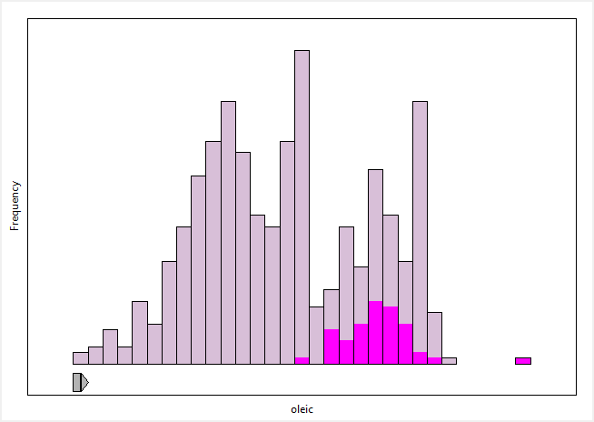 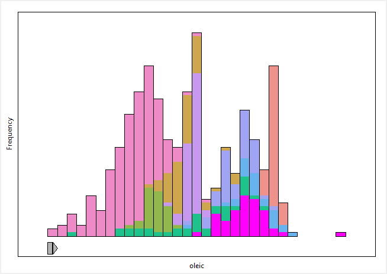
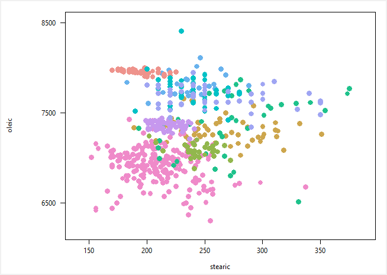
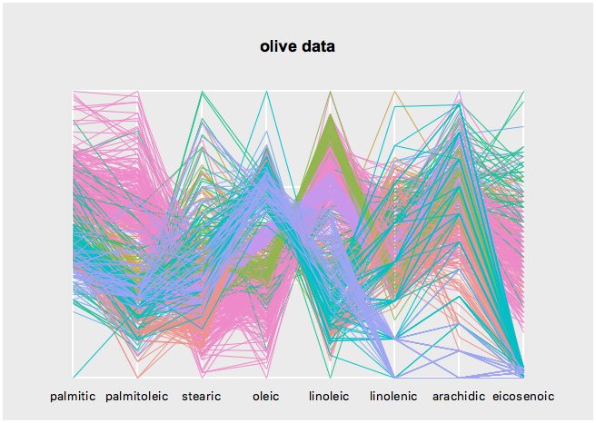 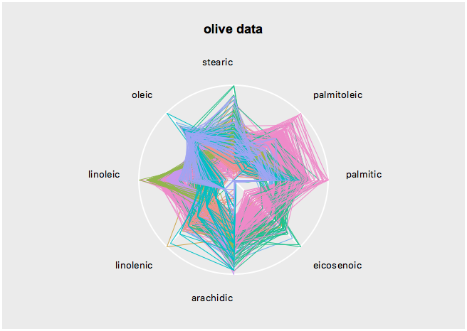
Point glyph size mapping
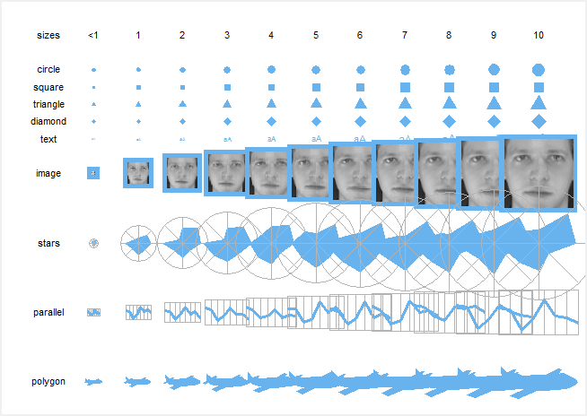
Navigation Graphs
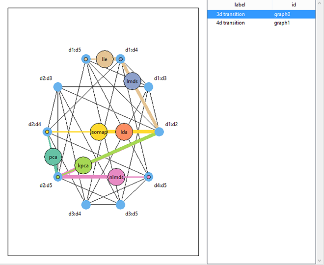 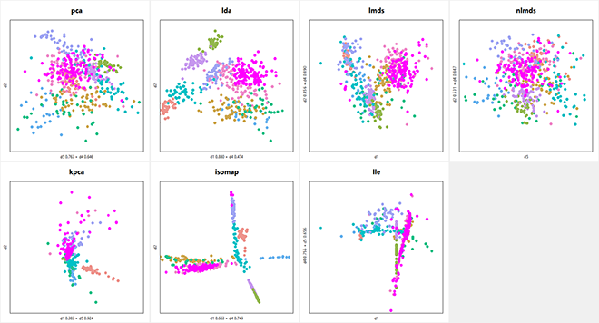
Maps
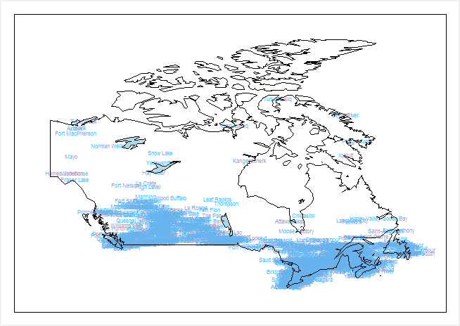
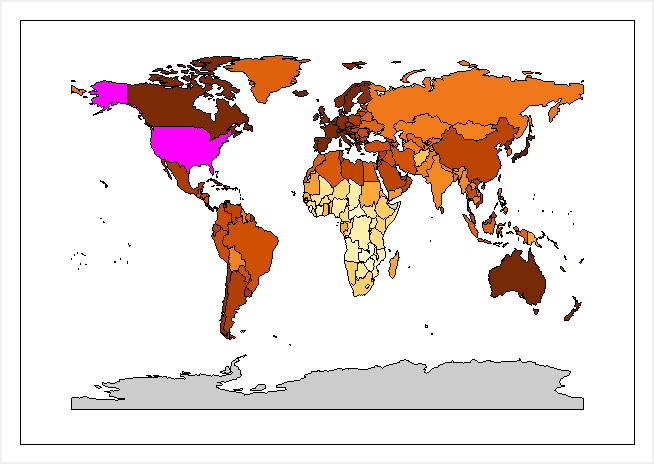
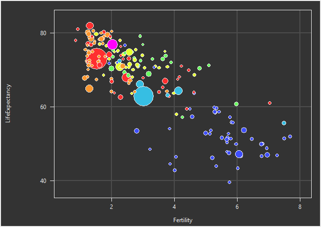
In R
demo('l_us_and_them_choropleth')
Naturalearth data
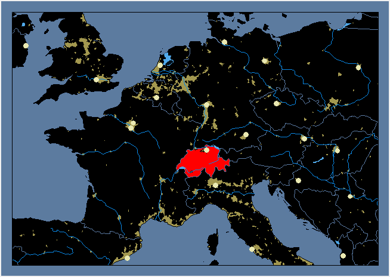
Image Data
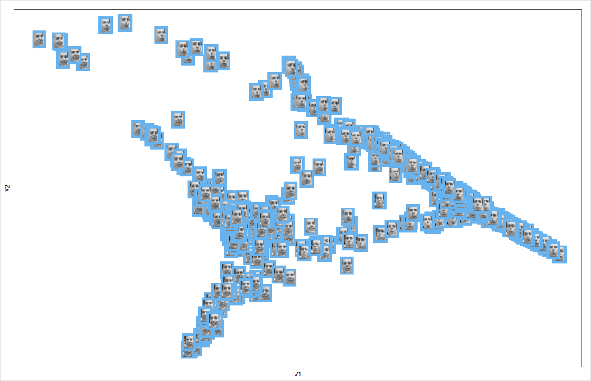